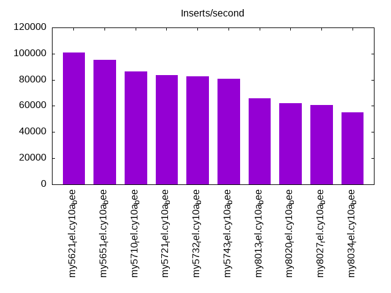
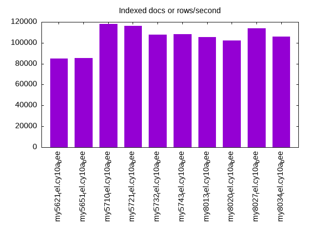
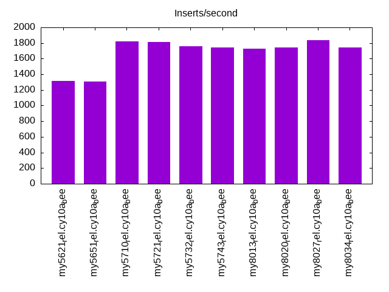
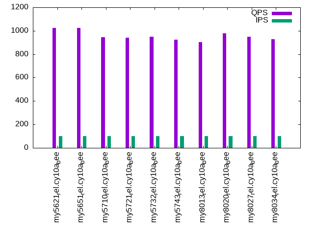
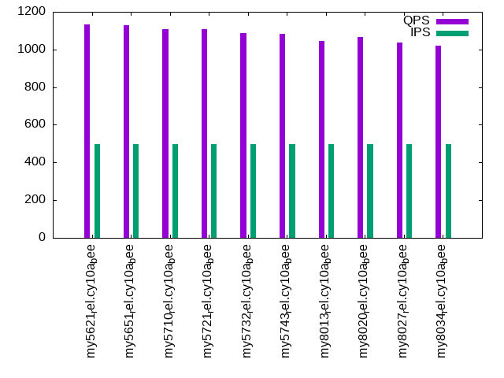
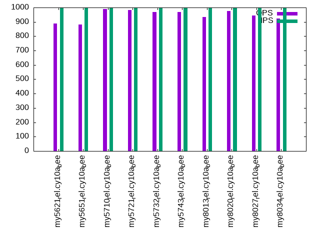

This is a report for the insert benchmark with 800M docs and 1 client(s). It is generated by scripts (bash, awk, sed) and Tufte might not be impressed. An overview of the insert benchmark is here and a short update is here. Below, by DBMS, I mean DBMS+version.config. An example is my8020.c10b40 where my means MySQL, 8020 is version 8.0.20 and c10b40 is the name for the configuration file.
The test server has 8 AMD cores, 16G RAM and an NVMe SSD. It is described here as the Beelink. The benchmark was run with 1 client and there were 1 or 3 connections per client (1 for queries or inserts without rate limits, 1+1 for rate limited inserts+deletes). There is 1 table. It loads 800M rows without secondary indexes, creates secondary indexes, then inserts 5M rows with a delete per insert to avoid growing the table. It then does 3 read+write tests for 1200s each that do queries as fast as possible with 100, 500 and then 1000 inserts/second/client concurrent with the queries and 1000 deletes/second to avoid growing the table. The database is larger than memory.
The tested DBMS are:
The numbers are inserts/s for l.i0 and l.i1, indexed docs (or rows) /s for l.x and queries/s for q100, q500, q1000. The values are the average rate over the entire test for inserts (IPS) and queries (QPS). The range of values for IPS and QPS is split into 3 parts: bottom 25%, middle 50%, top 25%. Values in the bottom 25% have a red background, values in the top 25% have a green background and values in the middle have no color. A gray background is used for values that can be ignored because the DBMS did not sustain the target insert rate. Red backgrounds are not used when the minimum value is within 80% of the max value.
| dbms | l.i0 | l.x | l.i1 | q100.1 | q500.1 | q1000.1 |
|---|---|---|---|---|---|---|
| my5621_rel.cy10a_bee | 101087 | 84918 | 1315 | 1024 | 1132 | 888 |
| my5651_rel.cy10a_bee | 95181 | 85226 | 1304 | 1026 | 1127 | 880 |
| my5710_rel.cy10a_bee | 86207 | 118009 | 1823 | 943 | 1109 | 988 |
| my5721_rel.cy10a_bee | 83446 | 116446 | 1810 | 941 | 1106 | 983 |
| my5732_rel.cy10a_bee | 82833 | 107627 | 1761 | 948 | 1087 | 969 |
| my5743_rel.cy10a_bee | 80922 | 108195 | 1746 | 926 | 1082 | 970 |
| my8013_rel.cy10a_bee | 65816 | 105666 | 1730 | 903 | 1046 | 934 |
| my8020_rel.cy10a_bee | 62083 | 102432 | 1746 | 979 | 1067 | 975 |
| my8027_rel.cy10a_bee | 60864 | 113845 | 1836 | 949 | 1039 | 944 |
| my8034_rel.cy10a_bee | 54866 | 106142 | 1743 | 929 | 1022 | 924 |
This table has relative throughput, throughput for the DBMS relative to the DBMS in the first line, using the absolute throughput from the previous table. Values less than 0.95 have a yellow background. Values greater than 1.05 have a blue background.
| dbms | l.i0 | l.x | l.i1 | q100.1 | q500.1 | q1000.1 |
|---|---|---|---|---|---|---|
| my5621_rel.cy10a_bee | 1.00 | 1.00 | 1.00 | 1.00 | 1.00 | 1.00 |
| my5651_rel.cy10a_bee | 0.94 | 1.00 | 0.99 | 1.00 | 1.00 | 0.99 |
| my5710_rel.cy10a_bee | 0.85 | 1.39 | 1.39 | 0.92 | 0.98 | 1.11 |
| my5721_rel.cy10a_bee | 0.83 | 1.37 | 1.38 | 0.92 | 0.98 | 1.11 |
| my5732_rel.cy10a_bee | 0.82 | 1.27 | 1.34 | 0.93 | 0.96 | 1.09 |
| my5743_rel.cy10a_bee | 0.80 | 1.27 | 1.33 | 0.90 | 0.96 | 1.09 |
| my8013_rel.cy10a_bee | 0.65 | 1.24 | 1.32 | 0.88 | 0.92 | 1.05 |
| my8020_rel.cy10a_bee | 0.61 | 1.21 | 1.33 | 0.96 | 0.94 | 1.10 |
| my8027_rel.cy10a_bee | 0.60 | 1.34 | 1.40 | 0.93 | 0.92 | 1.06 |
| my8034_rel.cy10a_bee | 0.54 | 1.25 | 1.33 | 0.91 | 0.90 | 1.04 |
This lists the average rate of inserts/s for the tests that do inserts concurrent with queries. For such tests the query rate is listed in the table above. The read+write tests are setup so that the insert rate should match the target rate every second. Cells that are not at least 95% of the target have a red background to indicate a failure to satisfy the target.
| dbms | q100.1 | q500.1 | q1000.1 |
|---|---|---|---|
| my5621_rel.cy10a_bee | 100 | 499 | 998 |
| my5651_rel.cy10a_bee | 100 | 499 | 998 |
| my5710_rel.cy10a_bee | 100 | 499 | 998 |
| my5721_rel.cy10a_bee | 100 | 499 | 998 |
| my5732_rel.cy10a_bee | 100 | 499 | 998 |
| my5743_rel.cy10a_bee | 100 | 499 | 998 |
| my8013_rel.cy10a_bee | 100 | 499 | 998 |
| my8020_rel.cy10a_bee | 100 | 499 | 998 |
| my8027_rel.cy10a_bee | 100 | 499 | 998 |
| my8034_rel.cy10a_bee | 100 | 499 | 997 |
| target | 100 | 500 | 1000 |
l.i0: load without secondary indexes. Graphs for performance per 1-second interval are here.
Average throughput:
Insert response time histogram: each cell has the percentage of responses that take <= the time in the header and max is the max response time in seconds. For the max column values in the top 25% of the range have a red background and in the bottom 25% of the range have a green background. The red background is not used when the min value is within 80% of the max value.
| dbms | 256us | 1ms | 4ms | 16ms | 64ms | 256ms | 1s | 4s | 16s | gt | max |
|---|---|---|---|---|---|---|---|---|---|---|---|
| my5621_rel.cy10a_bee | 92.981 | 6.891 | 0.107 | 0.017 | 0.004 | 0.176 | |||||
| my5651_rel.cy10a_bee | 83.653 | 16.205 | 0.069 | 0.070 | 0.004 | 0.246 | |||||
| my5710_rel.cy10a_bee | 6.055 | 93.652 | 0.286 | 0.004 | 0.003 | 0.135 | |||||
| my5721_rel.cy10a_bee | 0.651 | 99.047 | 0.295 | 0.005 | 0.003 | 0.129 | |||||
| my5732_rel.cy10a_bee | 1.484 | 98.189 | 0.189 | 0.137 | 0.003 | 0.136 | |||||
| my5743_rel.cy10a_bee | 0.330 | 99.338 | 0.190 | 0.140 | 0.002 | 0.132 | |||||
| my8013_rel.cy10a_bee | 99.335 | 0.498 | 0.164 | 0.003 | nonzero | 0.299 | |||||
| my8020_rel.cy10a_bee | 99.302 | 0.523 | 0.171 | 0.004 | 0.124 | ||||||
| my8027_rel.cy10a_bee | 99.455 | 0.395 | 0.146 | 0.004 | 0.249 | ||||||
| my8034_rel.cy10a_bee | 99.358 | 0.488 | 0.150 | 0.003 | 0.099 |
Performance metrics for the DBMS listed above. Some are normalized by throughput, others are not. Legend for results is here.
ips qps rps rmbps wps wmbps rpq rkbpq wpi wkbpi csps cpups cspq cpupq dbgb1 dbgb2 rss maxop p50 p99 tag 101087 0 886 3.5 491.7 36.1 0.009 0.035 0.005 0.366 12846 21.8 0.127 17 52.6 93.1 10.6 0.176 101587 85053 800m.my5621_rel.cy10a_bee 95181 0 834 3.3 461.3 34.0 0.009 0.035 0.005 0.366 12099 21.5 0.127 18 52.6 93.1 10.6 0.246 95630 77190 800m.my5651_rel.cy10a_bee 86207 0 0 0.0 431.3 30.9 0.000 0.000 0.005 0.367 9541 21.3 0.111 20 52.6 93.1 10.9 0.135 86477 74823 800m.my5710_rel.cy10a_bee 83446 0 0 0.0 419.7 29.9 0.000 0.000 0.005 0.367 9282 21.7 0.111 21 52.6 93.1 10.9 0.129 83718 72917 800m.my5721_rel.cy10a_bee 82833 0 0 0.0 416.6 29.7 0.000 0.000 0.005 0.367 9199 21.2 0.111 20 52.6 93.1 10.9 0.136 83143 72509 800m.my5732_rel.cy10a_bee 80922 0 0 0.0 407.1 29.0 0.000 0.000 0.005 0.367 9025 21.3 0.112 21 52.6 93.1 10.9 0.132 81108 72221 800m.my5743_rel.cy10a_bee 65816 0 0 0.0 369.9 25.6 0.000 0.000 0.006 0.398 53961 34.4 0.820 42 52.4 55.0 11.1 0.299 65829 59273 800m.my8013_rel.cy10a_bee 62083 0 0 0.0 388.9 23.5 0.000 0.000 0.006 0.387 17109 21.8 0.276 28 52.4 61.0 11.1 0.124 61978 54944 800m.my8020_rel.cy10a_bee 60864 0 0 0.0 377.9 23.0 0.000 0.000 0.006 0.387 7138 20.3 0.117 27 52.4 61.0 11.0 0.249 60934 54168 800m.my8027_rel.cy10a_bee 54866 0 0 0.0 341.2 20.9 0.000 0.000 0.006 0.390 6603 19.7 0.120 29 52.4 61.0 11.1 0.099 55039 49267 800m.my8034_rel.cy10a_bee
l.x: create secondary indexes.
Average throughput:
Performance metrics for the DBMS listed above. Some are normalized by throughput, others are not. Legend for results is here.
ips qps rps rmbps wps wmbps rpq rkbpq wpi wkbpi csps cpups cspq cpupq dbgb1 dbgb2 rss maxop p50 p99 tag 84918 0 559 80.9 699.7 102.5 0.007 0.975 0.008 1.236 1963 11.3 0.023 11 108.4 148.9 10.8 0.015 NA NA 800m.my5621_rel.cy10a_bee 85226 0 559 81.2 701.0 102.9 0.007 0.976 0.008 1.236 1939 11.2 0.023 11 108.4 148.9 10.8 0.011 NA NA 800m.my5651_rel.cy10a_bee 118009 0 718 110.7 981.7 132.8 0.006 0.961 0.008 1.152 6552 12.4 0.056 8 117.7 158.2 11.1 0.019 NA NA 800m.my5710_rel.cy10a_bee 116446 0 702 109.2 975.0 131.1 0.006 0.960 0.008 1.153 6443 12.4 0.055 9 117.7 158.2 11.1 0.011 NA NA 800m.my5721_rel.cy10a_bee 107627 0 656 101.0 899.5 121.1 0.006 0.961 0.008 1.152 6074 12.1 0.056 9 117.7 158.2 11.1 0.016 NA NA 800m.my5732_rel.cy10a_bee 108195 0 656 101.5 897.5 121.6 0.006 0.960 0.008 1.151 6078 12.0 0.056 9 117.7 158.2 11.1 0.015 NA NA 800m.my5743_rel.cy10a_bee 105666 0 623 99.0 752.8 118.5 0.006 0.960 0.007 1.149 9515 13.8 0.090 10 117.2 119.8 11.3 0.015 NA NA 800m.my8013_rel.cy10a_bee 102432 0 610 96.1 827.4 114.9 0.006 0.960 0.008 1.148 6377 12.1 0.062 9 117.2 125.8 11.3 0.020 NA NA 800m.my8020_rel.cy10a_bee 113845 0 1838 172.4 2205.6 153.3 0.016 1.550 0.019 1.378 8830 43.6 0.078 31 117.2 125.8 11.2 0.011 NA NA 800m.my8027_rel.cy10a_bee 106142 0 1714 160.6 2062.4 142.8 0.016 1.550 0.019 1.378 8499 43.6 0.080 33 117.2 125.8 11.3 0.012 NA NA 800m.my8034_rel.cy10a_bee
l.i1: continue load after secondary indexes created. Graphs for performance per 1-second interval are here.
Average throughput:
Insert response time histogram: each cell has the percentage of responses that take <= the time in the header and max is the max response time in seconds. For the max column values in the top 25% of the range have a red background and in the bottom 25% of the range have a green background. The red background is not used when the min value is within 80% of the max value.
| dbms | 256us | 1ms | 4ms | 16ms | 64ms | 256ms | 1s | 4s | 16s | gt | max |
|---|---|---|---|---|---|---|---|---|---|---|---|
| my5621_rel.cy10a_bee | 1.828 | 87.643 | 10.527 | 0.002 | 0.873 | ||||||
| my5651_rel.cy10a_bee | 1.815 | 87.164 | 11.016 | 0.005 | 0.777 | ||||||
| my5710_rel.cy10a_bee | 34.268 | 60.133 | 5.596 | 0.003 | 0.299 | ||||||
| my5721_rel.cy10a_bee | 32.822 | 61.618 | 5.557 | 0.003 | 0.549 | ||||||
| my5732_rel.cy10a_bee | 32.889 | 60.796 | 6.312 | 0.003 | 0.322 | ||||||
| my5743_rel.cy10a_bee | 32.006 | 61.564 | 6.428 | 0.002 | 0.346 | ||||||
| my8013_rel.cy10a_bee | 31.457 | 61.764 | 6.776 | 0.003 | 0.308 | ||||||
| my8020_rel.cy10a_bee | 27.856 | 65.646 | 6.496 | 0.002 | 0.379 | ||||||
| my8027_rel.cy10a_bee | 33.397 | 60.836 | 5.766 | 0.001 | 0.310 | ||||||
| my8034_rel.cy10a_bee | 28.273 | 65.447 | 6.279 | 0.001 | 0.358 |
Delete response time histogram: each cell has the percentage of responses that take <= the time in the header and max is the max response time in seconds. For the max column values in the top 25% of the range have a red background and in the bottom 25% of the range have a green background. The red background is not used when the min value is within 80% of the max value.
| dbms | 256us | 1ms | 4ms | 16ms | 64ms | 256ms | 1s | 4s | 16s | gt | max |
|---|---|---|---|---|---|---|---|---|---|---|---|
| my5621_rel.cy10a_bee | 2.951 | 91.090 | 5.955 | 0.003 | 0.001 | 0.733 | |||||
| my5651_rel.cy10a_bee | 3.295 | 90.845 | 5.853 | 0.006 | 0.001 | 0.598 | |||||
| my5710_rel.cy10a_bee | 91.756 | 8.037 | 0.199 | 0.008 | 0.117 | ||||||
| my5721_rel.cy10a_bee | 91.759 | 8.024 | 0.206 | 0.011 | 0.139 | ||||||
| my5732_rel.cy10a_bee | 92.131 | 7.627 | 0.238 | 0.004 | 0.141 | ||||||
| my5743_rel.cy10a_bee | 89.574 | 10.143 | 0.276 | 0.007 | 0.087 | ||||||
| my8013_rel.cy10a_bee | 82.726 | 15.260 | 1.976 | 0.038 | 0.118 | ||||||
| my8020_rel.cy10a_bee | 77.227 | 21.497 | 1.250 | 0.026 | 0.101 | ||||||
| my8027_rel.cy10a_bee | 68.088 | 31.547 | 0.359 | 0.006 | 0.220 | ||||||
| my8034_rel.cy10a_bee | 25.187 | 74.434 | 0.377 | 0.002 | 0.068 |
Performance metrics for the DBMS listed above. Some are normalized by throughput, others are not. Legend for results is here.
ips qps rps rmbps wps wmbps rpq rkbpq wpi wkbpi csps cpups cspq cpupq dbgb1 dbgb2 rss maxop p50 p99 tag 1315 0 7588 118.0 9832.8 315.7 5.771 91.885 7.479 245.927 46337 14.7 35.245 894 146.1 186.7 10.5 0.873 1249 699 800m.my5621_rel.cy10a_bee 1304 0 7551 117.4 9869.9 314.1 5.790 92.183 7.568 246.645 45958 14.7 35.242 902 146.0 186.7 10.5 0.777 1249 649 800m.my5651_rel.cy10a_bee 1823 0 9116 142.4 12135.0 389.4 5.000 79.993 6.655 218.692 58191 22.9 31.914 1005 149.5 190.4 10.7 0.299 1698 749 800m.my5710_rel.cy10a_bee 1810 0 9166 143.2 12172.4 390.5 5.065 81.040 6.727 220.955 58720 22.9 32.449 1012 149.1 190.2 10.7 0.549 1698 749 800m.my5721_rel.cy10a_bee 1761 0 8896 139.0 11822.7 379.1 5.051 80.822 6.713 220.442 57149 22.3 32.450 1013 149.2 190.1 10.7 0.322 1599 699 800m.my5732_rel.cy10a_bee 1746 0 8824 137.9 11732.4 376.3 5.055 80.874 6.720 220.692 57680 22.4 33.039 1026 149.2 190.2 10.7 0.346 1599 699 800m.my5743_rel.cy10a_bee 1730 0 8713 136.1 12658.6 403.3 5.038 80.607 7.319 238.812 94914 34.0 54.879 1573 148.7 151.7 10.7 0.308 1598 749 800m.my8013_rel.cy10a_bee 1746 0 8907 139.2 14267.3 379.1 5.102 81.630 8.172 222.364 71840 17.9 41.150 820 148.4 157.4 10.5 0.379 1648 699 800m.my8020_rel.cy10a_bee 1836 0 9336 145.9 14956.3 397.7 5.086 81.382 8.148 221.896 65767 23.3 35.831 1016 148.4 157.4 10.7 0.310 1699 699 800m.my8027_rel.cy10a_bee 1743 0 8962 140.0 14525.6 397.6 5.143 82.283 8.335 233.629 60209 24.2 34.549 1111 148.2 157.2 10.7 0.358 1648 699 800m.my8034_rel.cy10a_bee
q100.1: range queries with 100 insert/s per client. Graphs for performance per 1-second interval are here.
Average throughput:
Query response time histogram: each cell has the percentage of responses that take <= the time in the header and max is the max response time in seconds. For max values in the top 25% of the range have a red background and in the bottom 25% of the range have a green background. The red background is not used when the min value is within 80% of the max value.
| dbms | 256us | 1ms | 4ms | 16ms | 64ms | 256ms | 1s | 4s | 16s | gt | max |
|---|---|---|---|---|---|---|---|---|---|---|---|
| my5621_rel.cy10a_bee | 28.918 | 16.794 | 52.799 | 1.480 | 0.009 | 0.048 | |||||
| my5651_rel.cy10a_bee | 28.636 | 17.047 | 52.782 | 1.527 | 0.009 | 0.048 | |||||
| my5710_rel.cy10a_bee | 12.008 | 30.501 | 55.350 | 2.130 | 0.011 | 0.041 | |||||
| my5721_rel.cy10a_bee | 10.970 | 31.394 | 55.549 | 2.077 | 0.010 | 0.046 | |||||
| my5732_rel.cy10a_bee | 9.245 | 32.788 | 55.904 | 2.053 | 0.010 | 0.039 | |||||
| my5743_rel.cy10a_bee | 8.906 | 32.900 | 56.017 | 2.166 | 0.011 | 0.046 | |||||
| my8013_rel.cy10a_bee | 15.892 | 26.081 | 55.422 | 2.590 | 0.014 | 0.045 | |||||
| my8020_rel.cy10a_bee | 12.429 | 29.792 | 56.272 | 1.481 | 0.027 | 0.051 | |||||
| my8027_rel.cy10a_bee | 3.688 | 37.690 | 56.940 | 1.660 | 0.022 | nonzero | 0.088 | ||||
| my8034_rel.cy10a_bee | 3.785 | 37.290 | 57.221 | 1.678 | 0.025 | 0.060 |
Insert response time histogram: each cell has the percentage of responses that take <= the time in the header and max is the max response time in seconds. For max values in the top 25% of the range have a red background and in the bottom 25% of the range have a green background. The red background is not used when the min value is within 80% of the max value.
| dbms | 256us | 1ms | 4ms | 16ms | 64ms | 256ms | 1s | 4s | 16s | gt | max |
|---|---|---|---|---|---|---|---|---|---|---|---|
| my5621_rel.cy10a_bee | 0.917 | 78.708 | 20.375 | 0.125 | |||||||
| my5651_rel.cy10a_bee | 2.708 | 60.875 | 36.417 | 0.125 | |||||||
| my5710_rel.cy10a_bee | 21.708 | 64.417 | 13.875 | 0.119 | |||||||
| my5721_rel.cy10a_bee | 28.333 | 59.375 | 12.292 | 0.105 | |||||||
| my5732_rel.cy10a_bee | 40.083 | 48.292 | 11.625 | 0.115 | |||||||
| my5743_rel.cy10a_bee | 20.208 | 65.000 | 14.792 | 0.104 | |||||||
| my8013_rel.cy10a_bee | 37.750 | 52.417 | 9.833 | 0.111 | |||||||
| my8020_rel.cy10a_bee | 32.833 | 64.417 | 2.750 | 0.110 | |||||||
| my8027_rel.cy10a_bee | 38.875 | 57.042 | 4.083 | 0.124 | |||||||
| my8034_rel.cy10a_bee | 27.542 | 69.083 | 3.375 | 0.121 |
Delete response time histogram: each cell has the percentage of responses that take <= the time in the header and max is the max response time in seconds. For max values in the top 25% of the range have a red background and in the bottom 25% of the range have a green background. The red background is not used when the min value is within 80% of the max value.
| dbms | 256us | 1ms | 4ms | 16ms | 64ms | 256ms | 1s | 4s | 16s | gt | max |
|---|---|---|---|---|---|---|---|---|---|---|---|
| my5621_rel.cy10a_bee | 9.542 | 68.542 | 21.917 | 0.060 | |||||||
| my5651_rel.cy10a_bee | 11.167 | 67.708 | 21.125 | 0.052 | |||||||
| my5710_rel.cy10a_bee | 52.750 | 47.167 | 0.083 | 0.019 | |||||||
| my5721_rel.cy10a_bee | 54.958 | 45.000 | 0.042 | 0.018 | |||||||
| my5732_rel.cy10a_bee | 56.625 | 43.250 | 0.125 | 0.034 | |||||||
| my5743_rel.cy10a_bee | 49.708 | 49.917 | 0.375 | 0.036 | |||||||
| my8013_rel.cy10a_bee | 69.667 | 29.625 | 0.708 | 0.058 | |||||||
| my8020_rel.cy10a_bee | 69.375 | 30.125 | 0.500 | 0.038 | |||||||
| my8027_rel.cy10a_bee | 40.208 | 59.542 | 0.250 | 0.028 | |||||||
| my8034_rel.cy10a_bee | 22.417 | 76.167 | 1.417 | 0.042 |
Performance metrics for the DBMS listed above. Some are normalized by throughput, others are not. Legend for results is here.
ips qps rps rmbps wps wmbps rpq rkbpq wpi wkbpi csps cpups cspq cpupq dbgb1 dbgb2 rss maxop p50 p99 tag 100 1024 9884 154.4 5678.3 174.8 9.649 154.317 56.897 1793.718 39389 10.6 38.451 828 146.1 186.7 10.5 0.048 927 751 800m.my5621_rel.cy10a_bee 100 1026 9823 153.4 5659.0 172.6 9.574 153.116 56.704 1771.365 39216 10.5 38.222 819 146.0 186.7 10.5 0.048 911 751 800m.my5651_rel.cy10a_bee 100 943 11709 183.0 8438.2 241.6 12.419 198.696 84.721 2483.839 52656 16.7 55.844 1417 149.5 190.4 10.7 0.041 943 751 800m.my5710_rel.cy10a_bee 100 941 11483 179.4 8353.9 234.9 12.207 195.313 83.790 2413.037 52035 16.4 55.315 1395 149.1 190.2 10.7 0.046 927 783 800m.my5721_rel.cy10a_bee 100 948 11562 180.6 8016.4 236.3 12.201 195.214 80.325 2424.082 51507 16.6 54.356 1401 149.2 190.1 10.7 0.039 943 783 800m.my5732_rel.cy10a_bee 100 926 11453 178.9 8476.1 235.6 12.372 197.950 84.846 2415.415 52964 16.6 57.215 1435 149.2 190.2 10.7 0.046 927 799 800m.my5743_rel.cy10a_bee 100 903 11454 179.0 9544.8 281.9 12.685 202.958 95.735 2895.077 88273 29.6 97.756 2622 148.7 151.7 10.7 0.045 911 719 800m.my8013_rel.cy10a_bee 100 979 11641 181.9 9689.2 247.6 11.896 190.334 97.086 2540.620 59239 14.3 60.534 1169 148.4 157.4 10.5 0.051 975 815 800m.my8020_rel.cy10a_bee 100 949 11361 177.5 9569.9 244.8 11.974 191.592 95.795 2508.784 53723 17.4 56.622 1467 148.4 157.4 10.7 0.088 927 783 800m.my8027_rel.cy10a_bee 100 929 11196 174.9 9728.3 252.5 12.054 192.860 97.772 2598.095 52472 18.0 56.494 1550 148.2 157.2 10.7 0.060 927 704 800m.my8034_rel.cy10a_bee
q500.1: range queries with 500 insert/s per client. Graphs for performance per 1-second interval are here.
Average throughput:
Query response time histogram: each cell has the percentage of responses that take <= the time in the header and max is the max response time in seconds. For max values in the top 25% of the range have a red background and in the bottom 25% of the range have a green background. The red background is not used when the min value is within 80% of the max value.
| dbms | 256us | 1ms | 4ms | 16ms | 64ms | 256ms | 1s | 4s | 16s | gt | max |
|---|---|---|---|---|---|---|---|---|---|---|---|
| my5621_rel.cy10a_bee | 32.561 | 15.008 | 51.658 | 0.768 | 0.004 | 0.040 | |||||
| my5651_rel.cy10a_bee | 32.191 | 15.226 | 51.790 | 0.789 | 0.004 | 0.042 | |||||
| my5710_rel.cy10a_bee | 14.763 | 31.979 | 52.263 | 0.990 | 0.005 | 0.047 | |||||
| my5721_rel.cy10a_bee | 11.838 | 34.719 | 52.499 | 0.939 | 0.004 | 0.040 | |||||
| my5732_rel.cy10a_bee | 10.002 | 35.910 | 53.111 | 0.972 | 0.005 | 0.044 | |||||
| my5743_rel.cy10a_bee | 8.725 | 37.038 | 53.270 | 0.963 | 0.004 | 0.052 | |||||
| my8013_rel.cy10a_bee | 12.323 | 32.379 | 54.251 | 1.041 | 0.006 | 0.039 | |||||
| my8020_rel.cy10a_bee | 10.416 | 34.493 | 54.332 | 0.745 | 0.013 | 0.047 | |||||
| my8027_rel.cy10a_bee | 4.120 | 40.356 | 54.671 | 0.840 | 0.014 | nonzero | 0.078 | ||||
| my8034_rel.cy10a_bee | 3.944 | 40.339 | 54.847 | 0.861 | 0.010 | 0.049 |
Insert response time histogram: each cell has the percentage of responses that take <= the time in the header and max is the max response time in seconds. For max values in the top 25% of the range have a red background and in the bottom 25% of the range have a green background. The red background is not used when the min value is within 80% of the max value.
| dbms | 256us | 1ms | 4ms | 16ms | 64ms | 256ms | 1s | 4s | 16s | gt | max |
|---|---|---|---|---|---|---|---|---|---|---|---|
| my5621_rel.cy10a_bee | 1.625 | 94.658 | 3.717 | 0.112 | |||||||
| my5651_rel.cy10a_bee | 1.275 | 94.208 | 4.517 | 0.127 | |||||||
| my5710_rel.cy10a_bee | 49.617 | 49.508 | 0.875 | 0.107 | |||||||
| my5721_rel.cy10a_bee | 51.050 | 48.225 | 0.725 | 0.095 | |||||||
| my5732_rel.cy10a_bee | 64.025 | 35.675 | 0.300 | 0.095 | |||||||
| my5743_rel.cy10a_bee | 60.683 | 39.067 | 0.250 | 0.088 | |||||||
| my8013_rel.cy10a_bee | 40.758 | 58.758 | 0.483 | 0.099 | |||||||
| my8020_rel.cy10a_bee | 20.367 | 79.583 | 0.050 | 0.090 | |||||||
| my8027_rel.cy10a_bee | 46.975 | 52.917 | 0.108 | 0.098 | |||||||
| my8034_rel.cy10a_bee | 27.992 | 72.008 | 0.061 |
Delete response time histogram: each cell has the percentage of responses that take <= the time in the header and max is the max response time in seconds. For max values in the top 25% of the range have a red background and in the bottom 25% of the range have a green background. The red background is not used when the min value is within 80% of the max value.
| dbms | 256us | 1ms | 4ms | 16ms | 64ms | 256ms | 1s | 4s | 16s | gt | max |
|---|---|---|---|---|---|---|---|---|---|---|---|
| my5621_rel.cy10a_bee | 14.617 | 80.033 | 5.342 | 0.008 | 0.071 | ||||||
| my5651_rel.cy10a_bee | 15.250 | 79.033 | 5.700 | 0.017 | 0.087 | ||||||
| my5710_rel.cy10a_bee | 99.017 | 0.983 | 0.013 | ||||||||
| my5721_rel.cy10a_bee | 99.017 | 0.983 | 0.015 | ||||||||
| my5732_rel.cy10a_bee | 94.658 | 5.342 | 0.015 | ||||||||
| my5743_rel.cy10a_bee | 94.283 | 5.717 | 0.014 | ||||||||
| my8013_rel.cy10a_bee | 94.133 | 5.250 | 0.617 | 0.052 | |||||||
| my8020_rel.cy10a_bee | 91.483 | 8.342 | 0.175 | 0.032 | |||||||
| my8027_rel.cy10a_bee | 98.300 | 1.700 | 0.014 | ||||||||
| my8034_rel.cy10a_bee | 90.125 | 9.808 | 0.067 | 0.026 |
Performance metrics for the DBMS listed above. Some are normalized by throughput, others are not. Legend for results is here.
ips qps rps rmbps wps wmbps rpq rkbpq wpi wkbpi csps cpups cspq cpupq dbgb1 dbgb2 rss maxop p50 p99 tag 499 1132 9376 146.3 4071.5 125.5 8.279 132.264 8.164 257.719 34456 10.4 30.425 735 146.1 186.7 10.5 0.040 1135 1054 800m.my5621_rel.cy10a_bee 499 1127 9338 145.7 4104.8 125.2 8.288 132.405 8.224 256.931 34312 10.4 30.451 738 146.0 186.7 10.5 0.042 1119 1055 800m.my5651_rel.cy10a_bee 499 1109 9338 145.9 4360.8 133.4 8.420 134.713 8.744 274.013 36054 11.6 32.507 837 149.5 190.4 10.7 0.047 1103 1052 800m.my5710_rel.cy10a_bee 499 1106 9301 145.3 4308.5 131.9 8.409 134.541 8.632 270.532 35848 11.6 32.409 839 149.1 190.2 10.7 0.040 1103 1039 800m.my5721_rel.cy10a_bee 499 1087 9223 144.1 4295.7 131.9 8.484 135.736 8.614 270.907 35553 11.6 32.701 854 149.2 190.1 10.7 0.044 1087 1023 800m.my5732_rel.cy10a_bee 499 1082 9203 143.8 4318.6 132.6 8.503 136.046 8.660 272.236 35900 11.7 33.170 865 149.2 190.2 10.7 0.052 1087 1023 800m.my5743_rel.cy10a_bee 499 1046 9079 141.9 4948.4 151.8 8.678 138.855 9.915 311.455 48708 15.9 46.557 1216 148.7 151.7 10.7 0.039 1055 974 800m.my8013_rel.cy10a_bee 499 1067 9146 142.9 5391.5 137.6 8.572 137.148 10.802 282.377 38075 11.2 35.684 840 148.4 157.4 10.5 0.047 1071 991 800m.my8020_rel.cy10a_bee 499 1039 9008 140.7 5353.3 136.8 8.672 138.757 10.734 280.861 37179 12.4 35.794 955 148.4 157.4 10.7 0.078 1039 975 800m.my8027_rel.cy10a_bee 499 1022 8905 139.1 5434.0 141.6 8.714 139.418 10.896 290.813 36638 12.9 35.850 1010 148.2 157.2 10.7 0.049 1023 959 800m.my8034_rel.cy10a_bee
q1000.1: range queries with 1000 insert/s per client. Graphs for performance per 1-second interval are here.
Average throughput:
Query response time histogram: each cell has the percentage of responses that take <= the time in the header and max is the max response time in seconds. For max values in the top 25% of the range have a red background and in the bottom 25% of the range have a green background. The red background is not used when the min value is within 80% of the max value.
| dbms | 256us | 1ms | 4ms | 16ms | 64ms | 256ms | 1s | 4s | 16s | gt | max |
|---|---|---|---|---|---|---|---|---|---|---|---|
| my5621_rel.cy10a_bee | 22.007 | 18.855 | 56.819 | 2.309 | 0.011 | 0.044 | |||||
| my5651_rel.cy10a_bee | 20.336 | 20.390 | 56.918 | 2.344 | 0.011 | 0.044 | |||||
| my5710_rel.cy10a_bee | 13.361 | 30.153 | 54.532 | 1.943 | 0.011 | 0.049 | |||||
| my5721_rel.cy10a_bee | 11.200 | 32.053 | 54.788 | 1.948 | 0.010 | 0.043 | |||||
| my5732_rel.cy10a_bee | 9.780 | 32.922 | 55.305 | 1.982 | 0.011 | 0.054 | |||||
| my5743_rel.cy10a_bee | 9.625 | 33.116 | 55.248 | 2.000 | 0.011 | 0.043 | |||||
| my8013_rel.cy10a_bee | 14.028 | 28.165 | 55.454 | 2.339 | 0.013 | 0.057 | |||||
| my8020_rel.cy10a_bee | 11.927 | 30.206 | 56.335 | 1.493 | 0.039 | 0.051 | |||||
| my8027_rel.cy10a_bee | 3.853 | 37.637 | 56.815 | 1.661 | 0.034 | nonzero | 0.158 | ||||
| my8034_rel.cy10a_bee | 3.832 | 37.235 | 57.164 | 1.741 | 0.029 | 0.049 |
Insert response time histogram: each cell has the percentage of responses that take <= the time in the header and max is the max response time in seconds. For max values in the top 25% of the range have a red background and in the bottom 25% of the range have a green background. The red background is not used when the min value is within 80% of the max value.
| dbms | 256us | 1ms | 4ms | 16ms | 64ms | 256ms | 1s | 4s | 16s | gt | max |
|---|---|---|---|---|---|---|---|---|---|---|---|
| my5621_rel.cy10a_bee | 12.858 | 80.308 | 6.833 | 0.129 | |||||||
| my5651_rel.cy10a_bee | 12.304 | 81.117 | 6.579 | 0.131 | |||||||
| my5710_rel.cy10a_bee | 70.183 | 29.517 | 0.300 | 0.106 | |||||||
| my5721_rel.cy10a_bee | 69.729 | 29.967 | 0.304 | 0.126 | |||||||
| my5732_rel.cy10a_bee | 72.854 | 26.896 | 0.250 | 0.085 | |||||||
| my5743_rel.cy10a_bee | 70.525 | 29.204 | 0.271 | 0.095 | |||||||
| my8013_rel.cy10a_bee | 60.337 | 38.012 | 1.650 | 0.121 | |||||||
| my8020_rel.cy10a_bee | 65.021 | 33.296 | 1.683 | 0.120 | |||||||
| my8027_rel.cy10a_bee | 84.971 | 14.250 | 0.779 | 0.111 | |||||||
| my8034_rel.cy10a_bee | 70.487 | 27.683 | 1.829 | 0.139 |
Delete response time histogram: each cell has the percentage of responses that take <= the time in the header and max is the max response time in seconds. For max values in the top 25% of the range have a red background and in the bottom 25% of the range have a green background. The red background is not used when the min value is within 80% of the max value.
| dbms | 256us | 1ms | 4ms | 16ms | 64ms | 256ms | 1s | 4s | 16s | gt | max |
|---|---|---|---|---|---|---|---|---|---|---|---|
| my5621_rel.cy10a_bee | 7.025 | 89.154 | 3.821 | 0.060 | |||||||
| my5651_rel.cy10a_bee | 7.037 | 89.079 | 3.883 | 0.052 | |||||||
| my5710_rel.cy10a_bee | 96.775 | 3.200 | 0.025 | 0.042 | |||||||
| my5721_rel.cy10a_bee | 96.792 | 3.188 | 0.021 | 0.031 | |||||||
| my5732_rel.cy10a_bee | 96.213 | 3.758 | 0.029 | 0.034 | |||||||
| my5743_rel.cy10a_bee | 96.075 | 3.921 | 0.004 | 0.016 | |||||||
| my8013_rel.cy10a_bee | 96.737 | 2.525 | 0.733 | 0.004 | 0.083 | ||||||
| my8020_rel.cy10a_bee | 93.829 | 4.942 | 1.229 | 0.058 | |||||||
| my8027_rel.cy10a_bee | 96.312 | 3.450 | 0.237 | 0.059 | |||||||
| my8034_rel.cy10a_bee | 74.462 | 25.233 | 0.304 | 0.034 |
Performance metrics for the DBMS listed above. Some are normalized by throughput, others are not. Legend for results is here.
ips qps rps rmbps wps wmbps rpq rkbpq wpi wkbpi csps cpups cspq cpupq dbgb1 dbgb2 rss maxop p50 p99 tag 998 888 11453 178.5 7526.3 232.2 12.905 205.988 7.545 238.369 49378 15.6 55.637 1406 146.1 186.7 10.5 0.044 880 800 800m.my5621_rel.cy10a_bee 998 880 11408 177.8 7588.3 231.9 12.958 206.836 7.601 237.898 49126 15.5 55.800 1408 146.0 186.7 10.5 0.044 879 815 800m.my5651_rel.cy10a_bee 998 988 12060 188.4 7741.0 238.8 12.201 195.218 7.754 244.955 51964 17.0 52.573 1376 149.5 190.4 10.7 0.049 991 863 800m.my5710_rel.cy10a_bee 998 983 12018 187.8 7735.8 238.5 12.226 195.613 7.749 244.622 52008 17.1 52.907 1392 149.1 190.2 10.7 0.043 991 863 800m.my5721_rel.cy10a_bee 998 969 11944 186.6 7729.8 238.1 12.325 197.205 7.749 244.436 51956 17.1 53.613 1412 149.2 190.1 10.7 0.054 975 831 800m.my5732_rel.cy10a_bee 998 970 11944 186.6 7730.4 238.0 12.316 197.062 7.744 244.141 52646 17.3 54.286 1427 149.2 190.2 10.7 0.043 975 831 800m.my5743_rel.cy10a_bee 998 934 11777 184.0 8901.0 274.0 12.603 201.643 8.916 281.063 79967 26.4 85.572 2260 148.7 151.7 10.7 0.057 928 816 800m.my8013_rel.cy10a_bee 998 975 12007 187.6 9760.4 249.8 12.316 197.058 9.777 256.273 58512 15.7 60.019 1288 148.4 157.4 10.5 0.051 975 895 800m.my8020_rel.cy10a_bee 998 944 11858 185.3 9752.3 249.8 12.565 201.034 9.769 256.242 55493 17.8 58.798 1509 148.4 157.4 10.7 0.158 943 863 800m.my8027_rel.cy10a_bee 997 924 11733 183.3 9965.3 260.2 12.691 203.058 9.999 267.303 54779 19.0 59.253 1644 148.2 157.2 10.7 0.049 927 847 800m.my8034_rel.cy10a_bee
l.i0: load without secondary indexes
Performance metrics for all DBMS, not just the ones listed above. Some are normalized by throughput, others are not. Legend for results is here.
ips qps rps rmbps wps wmbps rpq rkbpq wpi wkbpi csps cpups cspq cpupq dbgb1 dbgb2 rss maxop p50 p99 tag 101087 0 886 3.5 491.7 36.1 0.009 0.035 0.005 0.366 12846 21.8 0.127 17 52.6 93.1 10.6 0.176 101587 85053 800m.my5621_rel.cy10a_bee 95181 0 834 3.3 461.3 34.0 0.009 0.035 0.005 0.366 12099 21.5 0.127 18 52.6 93.1 10.6 0.246 95630 77190 800m.my5651_rel.cy10a_bee 86207 0 0 0.0 431.3 30.9 0.000 0.000 0.005 0.367 9541 21.3 0.111 20 52.6 93.1 10.9 0.135 86477 74823 800m.my5710_rel.cy10a_bee 83446 0 0 0.0 419.7 29.9 0.000 0.000 0.005 0.367 9282 21.7 0.111 21 52.6 93.1 10.9 0.129 83718 72917 800m.my5721_rel.cy10a_bee 82833 0 0 0.0 416.6 29.7 0.000 0.000 0.005 0.367 9199 21.2 0.111 20 52.6 93.1 10.9 0.136 83143 72509 800m.my5732_rel.cy10a_bee 80922 0 0 0.0 407.1 29.0 0.000 0.000 0.005 0.367 9025 21.3 0.112 21 52.6 93.1 10.9 0.132 81108 72221 800m.my5743_rel.cy10a_bee 65816 0 0 0.0 369.9 25.6 0.000 0.000 0.006 0.398 53961 34.4 0.820 42 52.4 55.0 11.1 0.299 65829 59273 800m.my8013_rel.cy10a_bee 62083 0 0 0.0 388.9 23.5 0.000 0.000 0.006 0.387 17109 21.8 0.276 28 52.4 61.0 11.1 0.124 61978 54944 800m.my8020_rel.cy10a_bee 60864 0 0 0.0 377.9 23.0 0.000 0.000 0.006 0.387 7138 20.3 0.117 27 52.4 61.0 11.0 0.249 60934 54168 800m.my8027_rel.cy10a_bee 54866 0 0 0.0 341.2 20.9 0.000 0.000 0.006 0.390 6603 19.7 0.120 29 52.4 61.0 11.1 0.099 55039 49267 800m.my8034_rel.cy10a_bee
l.x: create secondary indexes
Performance metrics for all DBMS, not just the ones listed above. Some are normalized by throughput, others are not. Legend for results is here.
ips qps rps rmbps wps wmbps rpq rkbpq wpi wkbpi csps cpups cspq cpupq dbgb1 dbgb2 rss maxop p50 p99 tag 84918 0 559 80.9 699.7 102.5 0.007 0.975 0.008 1.236 1963 11.3 0.023 11 108.4 148.9 10.8 0.015 NA NA 800m.my5621_rel.cy10a_bee 85226 0 559 81.2 701.0 102.9 0.007 0.976 0.008 1.236 1939 11.2 0.023 11 108.4 148.9 10.8 0.011 NA NA 800m.my5651_rel.cy10a_bee 118009 0 718 110.7 981.7 132.8 0.006 0.961 0.008 1.152 6552 12.4 0.056 8 117.7 158.2 11.1 0.019 NA NA 800m.my5710_rel.cy10a_bee 116446 0 702 109.2 975.0 131.1 0.006 0.960 0.008 1.153 6443 12.4 0.055 9 117.7 158.2 11.1 0.011 NA NA 800m.my5721_rel.cy10a_bee 107627 0 656 101.0 899.5 121.1 0.006 0.961 0.008 1.152 6074 12.1 0.056 9 117.7 158.2 11.1 0.016 NA NA 800m.my5732_rel.cy10a_bee 108195 0 656 101.5 897.5 121.6 0.006 0.960 0.008 1.151 6078 12.0 0.056 9 117.7 158.2 11.1 0.015 NA NA 800m.my5743_rel.cy10a_bee 105666 0 623 99.0 752.8 118.5 0.006 0.960 0.007 1.149 9515 13.8 0.090 10 117.2 119.8 11.3 0.015 NA NA 800m.my8013_rel.cy10a_bee 102432 0 610 96.1 827.4 114.9 0.006 0.960 0.008 1.148 6377 12.1 0.062 9 117.2 125.8 11.3 0.020 NA NA 800m.my8020_rel.cy10a_bee 113845 0 1838 172.4 2205.6 153.3 0.016 1.550 0.019 1.378 8830 43.6 0.078 31 117.2 125.8 11.2 0.011 NA NA 800m.my8027_rel.cy10a_bee 106142 0 1714 160.6 2062.4 142.8 0.016 1.550 0.019 1.378 8499 43.6 0.080 33 117.2 125.8 11.3 0.012 NA NA 800m.my8034_rel.cy10a_bee
l.i1: continue load after secondary indexes created
Performance metrics for all DBMS, not just the ones listed above. Some are normalized by throughput, others are not. Legend for results is here.
ips qps rps rmbps wps wmbps rpq rkbpq wpi wkbpi csps cpups cspq cpupq dbgb1 dbgb2 rss maxop p50 p99 tag 1315 0 7588 118.0 9832.8 315.7 5.771 91.885 7.479 245.927 46337 14.7 35.245 894 146.1 186.7 10.5 0.873 1249 699 800m.my5621_rel.cy10a_bee 1304 0 7551 117.4 9869.9 314.1 5.790 92.183 7.568 246.645 45958 14.7 35.242 902 146.0 186.7 10.5 0.777 1249 649 800m.my5651_rel.cy10a_bee 1823 0 9116 142.4 12135.0 389.4 5.000 79.993 6.655 218.692 58191 22.9 31.914 1005 149.5 190.4 10.7 0.299 1698 749 800m.my5710_rel.cy10a_bee 1810 0 9166 143.2 12172.4 390.5 5.065 81.040 6.727 220.955 58720 22.9 32.449 1012 149.1 190.2 10.7 0.549 1698 749 800m.my5721_rel.cy10a_bee 1761 0 8896 139.0 11822.7 379.1 5.051 80.822 6.713 220.442 57149 22.3 32.450 1013 149.2 190.1 10.7 0.322 1599 699 800m.my5732_rel.cy10a_bee 1746 0 8824 137.9 11732.4 376.3 5.055 80.874 6.720 220.692 57680 22.4 33.039 1026 149.2 190.2 10.7 0.346 1599 699 800m.my5743_rel.cy10a_bee 1730 0 8713 136.1 12658.6 403.3 5.038 80.607 7.319 238.812 94914 34.0 54.879 1573 148.7 151.7 10.7 0.308 1598 749 800m.my8013_rel.cy10a_bee 1746 0 8907 139.2 14267.3 379.1 5.102 81.630 8.172 222.364 71840 17.9 41.150 820 148.4 157.4 10.5 0.379 1648 699 800m.my8020_rel.cy10a_bee 1836 0 9336 145.9 14956.3 397.7 5.086 81.382 8.148 221.896 65767 23.3 35.831 1016 148.4 157.4 10.7 0.310 1699 699 800m.my8027_rel.cy10a_bee 1743 0 8962 140.0 14525.6 397.6 5.143 82.283 8.335 233.629 60209 24.2 34.549 1111 148.2 157.2 10.7 0.358 1648 699 800m.my8034_rel.cy10a_bee
q100.1: range queries with 100 insert/s per client
Performance metrics for all DBMS, not just the ones listed above. Some are normalized by throughput, others are not. Legend for results is here.
ips qps rps rmbps wps wmbps rpq rkbpq wpi wkbpi csps cpups cspq cpupq dbgb1 dbgb2 rss maxop p50 p99 tag 100 1024 9884 154.4 5678.3 174.8 9.649 154.317 56.897 1793.718 39389 10.6 38.451 828 146.1 186.7 10.5 0.048 927 751 800m.my5621_rel.cy10a_bee 100 1026 9823 153.4 5659.0 172.6 9.574 153.116 56.704 1771.365 39216 10.5 38.222 819 146.0 186.7 10.5 0.048 911 751 800m.my5651_rel.cy10a_bee 100 943 11709 183.0 8438.2 241.6 12.419 198.696 84.721 2483.839 52656 16.7 55.844 1417 149.5 190.4 10.7 0.041 943 751 800m.my5710_rel.cy10a_bee 100 941 11483 179.4 8353.9 234.9 12.207 195.313 83.790 2413.037 52035 16.4 55.315 1395 149.1 190.2 10.7 0.046 927 783 800m.my5721_rel.cy10a_bee 100 948 11562 180.6 8016.4 236.3 12.201 195.214 80.325 2424.082 51507 16.6 54.356 1401 149.2 190.1 10.7 0.039 943 783 800m.my5732_rel.cy10a_bee 100 926 11453 178.9 8476.1 235.6 12.372 197.950 84.846 2415.415 52964 16.6 57.215 1435 149.2 190.2 10.7 0.046 927 799 800m.my5743_rel.cy10a_bee 100 903 11454 179.0 9544.8 281.9 12.685 202.958 95.735 2895.077 88273 29.6 97.756 2622 148.7 151.7 10.7 0.045 911 719 800m.my8013_rel.cy10a_bee 100 979 11641 181.9 9689.2 247.6 11.896 190.334 97.086 2540.620 59239 14.3 60.534 1169 148.4 157.4 10.5 0.051 975 815 800m.my8020_rel.cy10a_bee 100 949 11361 177.5 9569.9 244.8 11.974 191.592 95.795 2508.784 53723 17.4 56.622 1467 148.4 157.4 10.7 0.088 927 783 800m.my8027_rel.cy10a_bee 100 929 11196 174.9 9728.3 252.5 12.054 192.860 97.772 2598.095 52472 18.0 56.494 1550 148.2 157.2 10.7 0.060 927 704 800m.my8034_rel.cy10a_bee
q500.1: range queries with 500 insert/s per client
Performance metrics for all DBMS, not just the ones listed above. Some are normalized by throughput, others are not. Legend for results is here.
ips qps rps rmbps wps wmbps rpq rkbpq wpi wkbpi csps cpups cspq cpupq dbgb1 dbgb2 rss maxop p50 p99 tag 499 1132 9376 146.3 4071.5 125.5 8.279 132.264 8.164 257.719 34456 10.4 30.425 735 146.1 186.7 10.5 0.040 1135 1054 800m.my5621_rel.cy10a_bee 499 1127 9338 145.7 4104.8 125.2 8.288 132.405 8.224 256.931 34312 10.4 30.451 738 146.0 186.7 10.5 0.042 1119 1055 800m.my5651_rel.cy10a_bee 499 1109 9338 145.9 4360.8 133.4 8.420 134.713 8.744 274.013 36054 11.6 32.507 837 149.5 190.4 10.7 0.047 1103 1052 800m.my5710_rel.cy10a_bee 499 1106 9301 145.3 4308.5 131.9 8.409 134.541 8.632 270.532 35848 11.6 32.409 839 149.1 190.2 10.7 0.040 1103 1039 800m.my5721_rel.cy10a_bee 499 1087 9223 144.1 4295.7 131.9 8.484 135.736 8.614 270.907 35553 11.6 32.701 854 149.2 190.1 10.7 0.044 1087 1023 800m.my5732_rel.cy10a_bee 499 1082 9203 143.8 4318.6 132.6 8.503 136.046 8.660 272.236 35900 11.7 33.170 865 149.2 190.2 10.7 0.052 1087 1023 800m.my5743_rel.cy10a_bee 499 1046 9079 141.9 4948.4 151.8 8.678 138.855 9.915 311.455 48708 15.9 46.557 1216 148.7 151.7 10.7 0.039 1055 974 800m.my8013_rel.cy10a_bee 499 1067 9146 142.9 5391.5 137.6 8.572 137.148 10.802 282.377 38075 11.2 35.684 840 148.4 157.4 10.5 0.047 1071 991 800m.my8020_rel.cy10a_bee 499 1039 9008 140.7 5353.3 136.8 8.672 138.757 10.734 280.861 37179 12.4 35.794 955 148.4 157.4 10.7 0.078 1039 975 800m.my8027_rel.cy10a_bee 499 1022 8905 139.1 5434.0 141.6 8.714 139.418 10.896 290.813 36638 12.9 35.850 1010 148.2 157.2 10.7 0.049 1023 959 800m.my8034_rel.cy10a_bee
q1000.1: range queries with 1000 insert/s per client
Performance metrics for all DBMS, not just the ones listed above. Some are normalized by throughput, others are not. Legend for results is here.
ips qps rps rmbps wps wmbps rpq rkbpq wpi wkbpi csps cpups cspq cpupq dbgb1 dbgb2 rss maxop p50 p99 tag 998 888 11453 178.5 7526.3 232.2 12.905 205.988 7.545 238.369 49378 15.6 55.637 1406 146.1 186.7 10.5 0.044 880 800 800m.my5621_rel.cy10a_bee 998 880 11408 177.8 7588.3 231.9 12.958 206.836 7.601 237.898 49126 15.5 55.800 1408 146.0 186.7 10.5 0.044 879 815 800m.my5651_rel.cy10a_bee 998 988 12060 188.4 7741.0 238.8 12.201 195.218 7.754 244.955 51964 17.0 52.573 1376 149.5 190.4 10.7 0.049 991 863 800m.my5710_rel.cy10a_bee 998 983 12018 187.8 7735.8 238.5 12.226 195.613 7.749 244.622 52008 17.1 52.907 1392 149.1 190.2 10.7 0.043 991 863 800m.my5721_rel.cy10a_bee 998 969 11944 186.6 7729.8 238.1 12.325 197.205 7.749 244.436 51956 17.1 53.613 1412 149.2 190.1 10.7 0.054 975 831 800m.my5732_rel.cy10a_bee 998 970 11944 186.6 7730.4 238.0 12.316 197.062 7.744 244.141 52646 17.3 54.286 1427 149.2 190.2 10.7 0.043 975 831 800m.my5743_rel.cy10a_bee 998 934 11777 184.0 8901.0 274.0 12.603 201.643 8.916 281.063 79967 26.4 85.572 2260 148.7 151.7 10.7 0.057 928 816 800m.my8013_rel.cy10a_bee 998 975 12007 187.6 9760.4 249.8 12.316 197.058 9.777 256.273 58512 15.7 60.019 1288 148.4 157.4 10.5 0.051 975 895 800m.my8020_rel.cy10a_bee 998 944 11858 185.3 9752.3 249.8 12.565 201.034 9.769 256.242 55493 17.8 58.798 1509 148.4 157.4 10.7 0.158 943 863 800m.my8027_rel.cy10a_bee 997 924 11733 183.3 9965.3 260.2 12.691 203.058 9.999 267.303 54779 19.0 59.253 1644 148.2 157.2 10.7 0.049 927 847 800m.my8034_rel.cy10a_bee
Insert response time histogram
256us 1ms 4ms 16ms 64ms 256ms 1s 4s 16s gt max tag 0.000 92.981 6.891 0.107 0.017 0.004 0.000 0.000 0.000 0.000 0.176 my5621_rel.cy10a_bee 0.000 83.653 16.205 0.069 0.070 0.004 0.000 0.000 0.000 0.000 0.246 my5651_rel.cy10a_bee 0.000 6.055 93.652 0.286 0.004 0.003 0.000 0.000 0.000 0.000 0.135 my5710_rel.cy10a_bee 0.000 0.651 99.047 0.295 0.005 0.003 0.000 0.000 0.000 0.000 0.129 my5721_rel.cy10a_bee 0.000 1.484 98.189 0.189 0.137 0.003 0.000 0.000 0.000 0.000 0.136 my5732_rel.cy10a_bee 0.000 0.330 99.338 0.190 0.140 0.002 0.000 0.000 0.000 0.000 0.132 my5743_rel.cy10a_bee 0.000 0.000 99.335 0.498 0.164 0.003 nonzero 0.000 0.000 0.000 0.299 my8013_rel.cy10a_bee 0.000 0.000 99.302 0.523 0.171 0.004 0.000 0.000 0.000 0.000 0.124 my8020_rel.cy10a_bee 0.000 0.000 99.455 0.395 0.146 0.004 0.000 0.000 0.000 0.000 0.249 my8027_rel.cy10a_bee 0.000 0.000 99.358 0.488 0.150 0.003 0.000 0.000 0.000 0.000 0.099 my8034_rel.cy10a_bee
TODO - determine whether there is data for create index response time
Insert response time histogram
256us 1ms 4ms 16ms 64ms 256ms 1s 4s 16s gt max tag 0.000 0.000 0.000 1.828 87.643 10.527 0.002 0.000 0.000 0.000 0.873 my5621_rel.cy10a_bee 0.000 0.000 0.000 1.815 87.164 11.016 0.005 0.000 0.000 0.000 0.777 my5651_rel.cy10a_bee 0.000 0.000 0.000 34.268 60.133 5.596 0.003 0.000 0.000 0.000 0.299 my5710_rel.cy10a_bee 0.000 0.000 0.000 32.822 61.618 5.557 0.003 0.000 0.000 0.000 0.549 my5721_rel.cy10a_bee 0.000 0.000 0.000 32.889 60.796 6.312 0.003 0.000 0.000 0.000 0.322 my5732_rel.cy10a_bee 0.000 0.000 0.000 32.006 61.564 6.428 0.002 0.000 0.000 0.000 0.346 my5743_rel.cy10a_bee 0.000 0.000 0.000 31.457 61.764 6.776 0.003 0.000 0.000 0.000 0.308 my8013_rel.cy10a_bee 0.000 0.000 0.000 27.856 65.646 6.496 0.002 0.000 0.000 0.000 0.379 my8020_rel.cy10a_bee 0.000 0.000 0.000 33.397 60.836 5.766 0.001 0.000 0.000 0.000 0.310 my8027_rel.cy10a_bee 0.000 0.000 0.000 28.273 65.447 6.279 0.001 0.000 0.000 0.000 0.358 my8034_rel.cy10a_bee
Delete response time histogram
256us 1ms 4ms 16ms 64ms 256ms 1s 4s 16s gt max tag 0.000 0.000 2.951 91.090 5.955 0.003 0.001 0.000 0.000 0.000 0.733 my5621_rel.cy10a_bee 0.000 0.000 3.295 90.845 5.853 0.006 0.001 0.000 0.000 0.000 0.598 my5651_rel.cy10a_bee 0.000 0.000 91.756 8.037 0.199 0.008 0.000 0.000 0.000 0.000 0.117 my5710_rel.cy10a_bee 0.000 0.000 91.759 8.024 0.206 0.011 0.000 0.000 0.000 0.000 0.139 my5721_rel.cy10a_bee 0.000 0.000 92.131 7.627 0.238 0.004 0.000 0.000 0.000 0.000 0.141 my5732_rel.cy10a_bee 0.000 0.000 89.574 10.143 0.276 0.007 0.000 0.000 0.000 0.000 0.087 my5743_rel.cy10a_bee 0.000 0.000 82.726 15.260 1.976 0.038 0.000 0.000 0.000 0.000 0.118 my8013_rel.cy10a_bee 0.000 0.000 77.227 21.497 1.250 0.026 0.000 0.000 0.000 0.000 0.101 my8020_rel.cy10a_bee 0.000 0.000 68.088 31.547 0.359 0.006 0.000 0.000 0.000 0.000 0.220 my8027_rel.cy10a_bee 0.000 0.000 25.187 74.434 0.377 0.002 0.000 0.000 0.000 0.000 0.068 my8034_rel.cy10a_bee
Query response time histogram
256us 1ms 4ms 16ms 64ms 256ms 1s 4s 16s gt max tag 28.918 16.794 52.799 1.480 0.009 0.000 0.000 0.000 0.000 0.000 0.048 my5621_rel.cy10a_bee 28.636 17.047 52.782 1.527 0.009 0.000 0.000 0.000 0.000 0.000 0.048 my5651_rel.cy10a_bee 12.008 30.501 55.350 2.130 0.011 0.000 0.000 0.000 0.000 0.000 0.041 my5710_rel.cy10a_bee 10.970 31.394 55.549 2.077 0.010 0.000 0.000 0.000 0.000 0.000 0.046 my5721_rel.cy10a_bee 9.245 32.788 55.904 2.053 0.010 0.000 0.000 0.000 0.000 0.000 0.039 my5732_rel.cy10a_bee 8.906 32.900 56.017 2.166 0.011 0.000 0.000 0.000 0.000 0.000 0.046 my5743_rel.cy10a_bee 15.892 26.081 55.422 2.590 0.014 0.000 0.000 0.000 0.000 0.000 0.045 my8013_rel.cy10a_bee 12.429 29.792 56.272 1.481 0.027 0.000 0.000 0.000 0.000 0.000 0.051 my8020_rel.cy10a_bee 3.688 37.690 56.940 1.660 0.022 nonzero 0.000 0.000 0.000 0.000 0.088 my8027_rel.cy10a_bee 3.785 37.290 57.221 1.678 0.025 0.000 0.000 0.000 0.000 0.000 0.060 my8034_rel.cy10a_bee
Insert response time histogram
256us 1ms 4ms 16ms 64ms 256ms 1s 4s 16s gt max tag 0.000 0.000 0.000 0.917 78.708 20.375 0.000 0.000 0.000 0.000 0.125 my5621_rel.cy10a_bee 0.000 0.000 0.000 2.708 60.875 36.417 0.000 0.000 0.000 0.000 0.125 my5651_rel.cy10a_bee 0.000 0.000 0.000 21.708 64.417 13.875 0.000 0.000 0.000 0.000 0.119 my5710_rel.cy10a_bee 0.000 0.000 0.000 28.333 59.375 12.292 0.000 0.000 0.000 0.000 0.105 my5721_rel.cy10a_bee 0.000 0.000 0.000 40.083 48.292 11.625 0.000 0.000 0.000 0.000 0.115 my5732_rel.cy10a_bee 0.000 0.000 0.000 20.208 65.000 14.792 0.000 0.000 0.000 0.000 0.104 my5743_rel.cy10a_bee 0.000 0.000 0.000 37.750 52.417 9.833 0.000 0.000 0.000 0.000 0.111 my8013_rel.cy10a_bee 0.000 0.000 0.000 32.833 64.417 2.750 0.000 0.000 0.000 0.000 0.110 my8020_rel.cy10a_bee 0.000 0.000 0.000 38.875 57.042 4.083 0.000 0.000 0.000 0.000 0.124 my8027_rel.cy10a_bee 0.000 0.000 0.000 27.542 69.083 3.375 0.000 0.000 0.000 0.000 0.121 my8034_rel.cy10a_bee
Delete response time histogram
256us 1ms 4ms 16ms 64ms 256ms 1s 4s 16s gt max tag 0.000 0.000 9.542 68.542 21.917 0.000 0.000 0.000 0.000 0.000 0.060 my5621_rel.cy10a_bee 0.000 0.000 11.167 67.708 21.125 0.000 0.000 0.000 0.000 0.000 0.052 my5651_rel.cy10a_bee 0.000 0.000 52.750 47.167 0.083 0.000 0.000 0.000 0.000 0.000 0.019 my5710_rel.cy10a_bee 0.000 0.000 54.958 45.000 0.042 0.000 0.000 0.000 0.000 0.000 0.018 my5721_rel.cy10a_bee 0.000 0.000 56.625 43.250 0.125 0.000 0.000 0.000 0.000 0.000 0.034 my5732_rel.cy10a_bee 0.000 0.000 49.708 49.917 0.375 0.000 0.000 0.000 0.000 0.000 0.036 my5743_rel.cy10a_bee 0.000 0.000 69.667 29.625 0.708 0.000 0.000 0.000 0.000 0.000 0.058 my8013_rel.cy10a_bee 0.000 0.000 69.375 30.125 0.500 0.000 0.000 0.000 0.000 0.000 0.038 my8020_rel.cy10a_bee 0.000 0.000 40.208 59.542 0.250 0.000 0.000 0.000 0.000 0.000 0.028 my8027_rel.cy10a_bee 0.000 0.000 22.417 76.167 1.417 0.000 0.000 0.000 0.000 0.000 0.042 my8034_rel.cy10a_bee
Query response time histogram
256us 1ms 4ms 16ms 64ms 256ms 1s 4s 16s gt max tag 32.561 15.008 51.658 0.768 0.004 0.000 0.000 0.000 0.000 0.000 0.040 my5621_rel.cy10a_bee 32.191 15.226 51.790 0.789 0.004 0.000 0.000 0.000 0.000 0.000 0.042 my5651_rel.cy10a_bee 14.763 31.979 52.263 0.990 0.005 0.000 0.000 0.000 0.000 0.000 0.047 my5710_rel.cy10a_bee 11.838 34.719 52.499 0.939 0.004 0.000 0.000 0.000 0.000 0.000 0.040 my5721_rel.cy10a_bee 10.002 35.910 53.111 0.972 0.005 0.000 0.000 0.000 0.000 0.000 0.044 my5732_rel.cy10a_bee 8.725 37.038 53.270 0.963 0.004 0.000 0.000 0.000 0.000 0.000 0.052 my5743_rel.cy10a_bee 12.323 32.379 54.251 1.041 0.006 0.000 0.000 0.000 0.000 0.000 0.039 my8013_rel.cy10a_bee 10.416 34.493 54.332 0.745 0.013 0.000 0.000 0.000 0.000 0.000 0.047 my8020_rel.cy10a_bee 4.120 40.356 54.671 0.840 0.014 nonzero 0.000 0.000 0.000 0.000 0.078 my8027_rel.cy10a_bee 3.944 40.339 54.847 0.861 0.010 0.000 0.000 0.000 0.000 0.000 0.049 my8034_rel.cy10a_bee
Insert response time histogram
256us 1ms 4ms 16ms 64ms 256ms 1s 4s 16s gt max tag 0.000 0.000 0.000 1.625 94.658 3.717 0.000 0.000 0.000 0.000 0.112 my5621_rel.cy10a_bee 0.000 0.000 0.000 1.275 94.208 4.517 0.000 0.000 0.000 0.000 0.127 my5651_rel.cy10a_bee 0.000 0.000 0.000 49.617 49.508 0.875 0.000 0.000 0.000 0.000 0.107 my5710_rel.cy10a_bee 0.000 0.000 0.000 51.050 48.225 0.725 0.000 0.000 0.000 0.000 0.095 my5721_rel.cy10a_bee 0.000 0.000 0.000 64.025 35.675 0.300 0.000 0.000 0.000 0.000 0.095 my5732_rel.cy10a_bee 0.000 0.000 0.000 60.683 39.067 0.250 0.000 0.000 0.000 0.000 0.088 my5743_rel.cy10a_bee 0.000 0.000 0.000 40.758 58.758 0.483 0.000 0.000 0.000 0.000 0.099 my8013_rel.cy10a_bee 0.000 0.000 0.000 20.367 79.583 0.050 0.000 0.000 0.000 0.000 0.090 my8020_rel.cy10a_bee 0.000 0.000 0.000 46.975 52.917 0.108 0.000 0.000 0.000 0.000 0.098 my8027_rel.cy10a_bee 0.000 0.000 0.000 27.992 72.008 0.000 0.000 0.000 0.000 0.000 0.061 my8034_rel.cy10a_bee
Delete response time histogram
256us 1ms 4ms 16ms 64ms 256ms 1s 4s 16s gt max tag 0.000 0.000 14.617 80.033 5.342 0.008 0.000 0.000 0.000 0.000 0.071 my5621_rel.cy10a_bee 0.000 0.000 15.250 79.033 5.700 0.017 0.000 0.000 0.000 0.000 0.087 my5651_rel.cy10a_bee 0.000 0.000 99.017 0.983 0.000 0.000 0.000 0.000 0.000 0.000 0.013 my5710_rel.cy10a_bee 0.000 0.000 99.017 0.983 0.000 0.000 0.000 0.000 0.000 0.000 0.015 my5721_rel.cy10a_bee 0.000 0.000 94.658 5.342 0.000 0.000 0.000 0.000 0.000 0.000 0.015 my5732_rel.cy10a_bee 0.000 0.000 94.283 5.717 0.000 0.000 0.000 0.000 0.000 0.000 0.014 my5743_rel.cy10a_bee 0.000 0.000 94.133 5.250 0.617 0.000 0.000 0.000 0.000 0.000 0.052 my8013_rel.cy10a_bee 0.000 0.000 91.483 8.342 0.175 0.000 0.000 0.000 0.000 0.000 0.032 my8020_rel.cy10a_bee 0.000 0.000 98.300 1.700 0.000 0.000 0.000 0.000 0.000 0.000 0.014 my8027_rel.cy10a_bee 0.000 0.000 90.125 9.808 0.067 0.000 0.000 0.000 0.000 0.000 0.026 my8034_rel.cy10a_bee
Query response time histogram
256us 1ms 4ms 16ms 64ms 256ms 1s 4s 16s gt max tag 22.007 18.855 56.819 2.309 0.011 0.000 0.000 0.000 0.000 0.000 0.044 my5621_rel.cy10a_bee 20.336 20.390 56.918 2.344 0.011 0.000 0.000 0.000 0.000 0.000 0.044 my5651_rel.cy10a_bee 13.361 30.153 54.532 1.943 0.011 0.000 0.000 0.000 0.000 0.000 0.049 my5710_rel.cy10a_bee 11.200 32.053 54.788 1.948 0.010 0.000 0.000 0.000 0.000 0.000 0.043 my5721_rel.cy10a_bee 9.780 32.922 55.305 1.982 0.011 0.000 0.000 0.000 0.000 0.000 0.054 my5732_rel.cy10a_bee 9.625 33.116 55.248 2.000 0.011 0.000 0.000 0.000 0.000 0.000 0.043 my5743_rel.cy10a_bee 14.028 28.165 55.454 2.339 0.013 0.000 0.000 0.000 0.000 0.000 0.057 my8013_rel.cy10a_bee 11.927 30.206 56.335 1.493 0.039 0.000 0.000 0.000 0.000 0.000 0.051 my8020_rel.cy10a_bee 3.853 37.637 56.815 1.661 0.034 nonzero 0.000 0.000 0.000 0.000 0.158 my8027_rel.cy10a_bee 3.832 37.235 57.164 1.741 0.029 0.000 0.000 0.000 0.000 0.000 0.049 my8034_rel.cy10a_bee
Insert response time histogram
256us 1ms 4ms 16ms 64ms 256ms 1s 4s 16s gt max tag 0.000 0.000 0.000 12.858 80.308 6.833 0.000 0.000 0.000 0.000 0.129 my5621_rel.cy10a_bee 0.000 0.000 0.000 12.304 81.117 6.579 0.000 0.000 0.000 0.000 0.131 my5651_rel.cy10a_bee 0.000 0.000 0.000 70.183 29.517 0.300 0.000 0.000 0.000 0.000 0.106 my5710_rel.cy10a_bee 0.000 0.000 0.000 69.729 29.967 0.304 0.000 0.000 0.000 0.000 0.126 my5721_rel.cy10a_bee 0.000 0.000 0.000 72.854 26.896 0.250 0.000 0.000 0.000 0.000 0.085 my5732_rel.cy10a_bee 0.000 0.000 0.000 70.525 29.204 0.271 0.000 0.000 0.000 0.000 0.095 my5743_rel.cy10a_bee 0.000 0.000 0.000 60.337 38.012 1.650 0.000 0.000 0.000 0.000 0.121 my8013_rel.cy10a_bee 0.000 0.000 0.000 65.021 33.296 1.683 0.000 0.000 0.000 0.000 0.120 my8020_rel.cy10a_bee 0.000 0.000 0.000 84.971 14.250 0.779 0.000 0.000 0.000 0.000 0.111 my8027_rel.cy10a_bee 0.000 0.000 0.000 70.487 27.683 1.829 0.000 0.000 0.000 0.000 0.139 my8034_rel.cy10a_bee
Delete response time histogram
256us 1ms 4ms 16ms 64ms 256ms 1s 4s 16s gt max tag 0.000 0.000 7.025 89.154 3.821 0.000 0.000 0.000 0.000 0.000 0.060 my5621_rel.cy10a_bee 0.000 0.000 7.037 89.079 3.883 0.000 0.000 0.000 0.000 0.000 0.052 my5651_rel.cy10a_bee 0.000 0.000 96.775 3.200 0.025 0.000 0.000 0.000 0.000 0.000 0.042 my5710_rel.cy10a_bee 0.000 0.000 96.792 3.188 0.021 0.000 0.000 0.000 0.000 0.000 0.031 my5721_rel.cy10a_bee 0.000 0.000 96.213 3.758 0.029 0.000 0.000 0.000 0.000 0.000 0.034 my5732_rel.cy10a_bee 0.000 0.000 96.075 3.921 0.004 0.000 0.000 0.000 0.000 0.000 0.016 my5743_rel.cy10a_bee 0.000 0.000 96.737 2.525 0.733 0.004 0.000 0.000 0.000 0.000 0.083 my8013_rel.cy10a_bee 0.000 0.000 93.829 4.942 1.229 0.000 0.000 0.000 0.000 0.000 0.058 my8020_rel.cy10a_bee 0.000 0.000 96.312 3.450 0.237 0.000 0.000 0.000 0.000 0.000 0.059 my8027_rel.cy10a_bee 0.000 0.000 74.462 25.233 0.304 0.000 0.000 0.000 0.000 0.000 0.034 my8034_rel.cy10a_bee